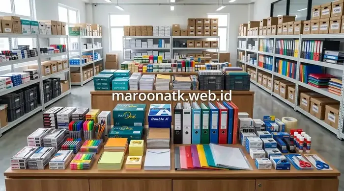

Pentingnya Menyusun Paket Pengadaan Alat Tulis Kantor Baru
Jawaban singkat: paket pengadaan alat tulis kantor untuk karyawan baru sebaiknya mencakup kebutuhan dasar seperti pulpen, pensil, penghapus, buku catatan, map, stapler, isi staples, sticky notes, dan perlengkapan meja kerja yang relevan. Daftar inventaris perlu disesuaikan dengan posisi, divisi, jumlah karyawan, serta kebijakan internal agar pembelian tetap efisien dan tidak menghasilkan stok yang tidak diperlukan.
Menyambut karyawan baru di lingkungan korporat membutuhkan kesiapan sarana kerja yang terkoordinasi. Bagi divisi Purchasing, General Affairs (GA), maupun Human Resources (HR), menyiapkan perlengkapan meja kerja dan alat tulis bukan sekadar formalitas administratif, melainkan langkah krusial untuk memastikan staf baru dapat langsung menjalankan aktivitas operasional tanpa kendala teknis.
Namun, dalam praktiknya, tim pengadaan sering kali dihadapkan pada dua tantangan: kekurangan perlengkapan mendasar yang memperlambat pekerjaan, atau sebaliknya, pengadaan berlebih yang berujung pada pemborosan anggaran. Oleh karena itu, standardisasi daftar inventaris dalam format paket pengadaan alat tulis kantor terbukti menjadi solusi yang praktis, terukur, dan akuntabel bagi perusahaan.

Cara Menghitung Kebutuhan ATK Kantor Bulanan Secara Akurat
Metode sistematis menghitung volume konsumsi barang habis pakai per divisi untuk mencegah pembengkakan anggaran.
Kategori Inventaris Wajib dalam Starter Kit ATK Karyawan
Untuk mempermudah proses kurasi dan pengelompokan item belanja, berikut adalah kategori perlengkapan kerja yang umumnya masuk ke dalam daftar inventaris starter kit kantor:
1. Perlengkapan Menulis Dasar
Alat tulis dasar merupakan fondasi utama pada setiap meja kerja. Item yang umumnya diperlukan meliputi ballpoint hitam dan biru dengan ketebalan standar, pensil mekanik atau grafit, penghapus, pengoreksi tulisan (correction tape), serta highlighter untuk menandai poin penting pada dokumen cetak.
2. Media Catatan & Pengingat (Stationery Notes)
Mencatat instruksi kerja dan agenda harian membutuhkan media tulis yang praktis. Menyediakan notebook bergaris berkualitas baik, buku agenda saku, serta aneka ukuran memo tempel (sticky notes) membantu karyawan mengorganisir tugas harian dengan lebih rapi.
3. Perlengkapan Dokumen & Pengarsipan Ringan
Pengelolaan lembar kerja memerlukan wadah proteksi yang memadai. Sediakan map plastik kancing, display book, clear folder, serta binder dokumen standar untuk memudahkan penyimpanan sementara berkas proyek sebelum dialihkan ke lemari arsip divisi.
4. Aksesori dan Perlengkapan Meja Kerja
Agar meja kerja tetap tertata rapi, sertakan tempat alat tulis (pen holder/desk organizer), stapler mini nomor 10 beserta cadangan isi staples, pembuka staples, gunting kertas berukuran sedang, serta klip kertas (paper clip & binder clip).

Pengelompokan ATK berdasarkan fungsi kerja mempermudah proses distribusi perlengkapan dan memastikan setiap divisi menerima inventaris yang relevan.

Spesifikasi Paket Pengadaan ATK Bulanan untuk Efisiensi Anggaran Perusahaan
Standardisasi spesifikasi teknis item ATK untuk memastikan kualitas barang tetap konsisten di setiap periode pengadaan.
Tabel Checklist Inventaris Paket Pengadaan ATK
Setiap karyawan tidak selalu membutuhkan perlengkapan yang sama persis. Berikut adalah matriks panduan pengadaan yang dapat disesuaikan dengan kebutuhan dan fungsi departemen:
| Kategori Inventaris | Contoh Item Esensial | Tingkat Kebutuhan | Catatan Alokasi |
|---|---|---|---|
| Menulis Dasar | Pulpen, pensil, correction tape | Sesuai kebutuhan umum | Diberikan secara merata ke seluruh lini karyawan |
| Catatan Kerja | Notebook eksklusif, sticky notes | Sesuai posisi & mobilitas | Buku catatan lebih tebal untuk fungsi koordinasi / manajerial |
| Dokumen & Berkas | Map kancing, clear holder, stopmap | Sesuai aktivitas divisi | Prioritas untuk divisi Legal, HRD, dan Finance |
| Arsip Operasional | Binder ordner, divider, label stiker | Sesuai sistem arsip | Disediakan per stasiun kerja atau per unit departemen |
| Meja Kerja | Stapler, isi staples, paper clip, gunting | Sesuai kebutuhan kerja | Dapat berupa perlengkapan personal atau dipakai bersama |
| Presentasi & Rapat | Spidol whiteboard, penghapus papan | Jika diperlukan divisi | Khusus untuk ruang pertemuan atau tim yang rutin presentasi |

Mengenal Keuntungan Sistem Paket Pengadaan Alat Tulis Kantor B2B
Bagaimana sistem bundling paket mampu menyederhanakan Purchase Order dan mengoptimalkan anggaran pengadaan.
Faktor yang Mempengaruhi Komposisi Inventaris ATK
Dalam menyusun rancangan pengadaan produk ATK kantor, tim purchasing disarankan untuk mengevaluasi beberapa parameter kontekstual berikut:
- Karakteristik Pekerjaan dan Divisi: Staf administrasi dan akuntansi tentu memiliki volume interaksi dokumen fisik yang lebih intens dibandingkan staf IT atau perancang grafis yang lebih banyak bekerja secara digital.
- Skema Kerja (Onsite vs Hybrid): Karyawan yang bekerja secara fleksibel atau mobile memerlukan starter kit yang ringkas, ringan, dan mudah dibawa berpindah tempat.
- Jumlah Karyawan dan Proyeksi Rekrutmen: Pembelian dalam jumlah yang terukur berdasarkan proyeksi triwulan membantu perusahaan memperoleh efisiensi pemesanan tanpa membebani kapasitas ruang penyimpanan.
- Kebijakan Internal dan Anggaran Perusahaan: Menetapkan pagu belanja per starter kit mempermudah pelaporan realisasi anggaran belanja operasional (OpEx).
Konsultasikan Kebutuhan Paket Starter Kit ATK Kantor Anda
Penyusunan Paket Kustom, Pengiriman Terjadwal, dan Dokumen Pengadaan Lengkap
Diskusikan spesifikasi kebutuhan inventaris ATK karyawan baru dan dapatkan penawaran harga pengadaan B2B transparan dari tim MAROON ATK.
Kesimpulan: Pengadaan Terencana untuk Operasional yang Efisien
Rangkuman Keputusan Pengadaan
Menyiapkan daftar inventaris wajib dalam paket pengadaan alat tulis kantor baru adalah langkah strategis untuk menciptakan lingkungan kerja yang terorganisir dan produktif.
- Struktur yang Jelas: Membagi item ke dalam kategori menulis, catatan, dokumen, dan meja kerja mempermudah proses verifikasi penerimaan barang.
- Efisiensi Anggaran: Menghindari pembelian impulsif dan penumpukan stok yang tidak diperlukan melalui sistem paket terencana.
- Kemitraan Terpercaya: MAROON ATK siap mendukung kebutuhan pengadaan perlengkapan kantor dengan variasi produk lengkap dan layanan profesional.
Pertanyaan Umum (FAQ) Paket Pengadaan ATK Baru
ATK esensial untuk karyawan baru mencakup pulpen, pensil, buku catatan (notebook), sticky notes, map dokumen, stapler mini beserta isi staples, klip kertas, serta tempat penyimpanan alat tulis meja. Daftar ini dapat disesuaikan dengan kebutuhan departemen.
Tidak. Kebutuhan ATK berbeda berdasarkan divisi kerja dan fungsi jabatan. Misalnya, staf finance dan legal memerlukan lebih banyak perlengkapan arsip dan dokumen fisik, sedangkan staf kreatif atau teknologi informasi membutuhkan perlengkapan yang lebih ringkas.
Penentuan jumlah ATK dilakukan dengan memperhitungkan proyeksi rekrutmen karyawan baru dalam periode tertentu, rata-rata konsumsi barang habis pakai, serta penyediaan buffer stock terkendali agar tidak terjadi kelebihan inventaris di gudang.

Arby Ardiansyah
Spesialis pengadaan perlengkapan kantor dengan pengalaman dalam standardisasi inventaris B2B, manajemen rantai pasok alat tulis, dan solusi efisiensi operasional korporat di Indonesia.